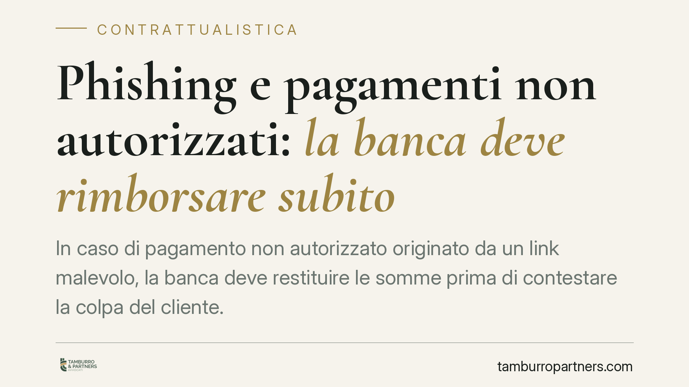

Phishing e pagamenti non autorizzati: la banca deve rimborsare subito
In caso di pagamento non autorizzato originato da un link malevolo, la banca deve restituire le somme prima di contestare la colpa del cliente. Una recente pronuncia della Corte di giustizia UE conferma questa sequenza, prevista dalla direttiva PSD2: prima il rimborso, poi l'eventuale accertamento della negligenza grave. Un principio che incide anche sulle clausole contrattuali bancarie.

Il caso
Un cliente riceve un messaggio apparentemente proveniente dalla propria banca. Il testo invita a cliccare su un link per "verificare" o "sbloccare" l'accesso. La pagina che si apre riproduce fedelmente il sito dell'istituto, ma è falsa. Le credenziali inserite finiscono ai truffatori, che dispongono bonifici non autorizzati.
Questo schema si chiama *phishing*: letteralmente "pescare" dati sensibili con un'esca. È la frode più diffusa sui conti correnti e solleva una domanda ricorrente: chi sopporta la perdita, il cliente o la banca?
La questione è arrivata davanti alla Corte di giustizia dell'Unione europea, investita da un rinvio pregiudiziale di un giudice polacco (Tribunale di Koszalin). Il tema: l'ordine con cui banca e cliente devono regolare i rapporti dopo un'operazione non autorizzata.
> Nota: il numero di causa e lo stato del procedimento (conclusioni dell'Avvocato generale o sentenza) vanno verificati su EUR-Lex/Curia prima di ogni citazione puntuale. In questa sede ci limitiamo al principio giuridico, che poggia su norme vigenti e consolidate.
Inquadramento normativo
La disciplina è contenuta nella Direttiva (UE) 2015/2366 (cosiddetta PSD2), recepita in Italia nel d.lgs. 11/2010 come modificato.
Le norme rilevanti sono quattro:
- Art. 69 – obblighi dell'utente: custodire le credenziali e usarle correttamente;
- Art. 72 – onere della prova: spetta al prestatore di servizi di pagamento (la banca) dimostrare che l'operazione è stata autenticata e correttamente registrata. Non basta l'avvenuta autenticazione tecnica per presumere l'autorizzazione del cliente;
- Art. 73 – rimborso: in caso di operazione non autorizzata, la banca deve restituire l'importo entro la fine della giornata operativa successiva alla segnalazione. Il paragrafo 1, secondo comma, consente di sospendere il rimborso solo se la banca ha un ragionevole sospetto di frode e lo comunica per iscritto alle autorità competenti;
- Art. 74 – ripartizione delle perdite: disciplina quando e in che misura il cliente può sopportare il danno, in particolare in presenza di dolo o colpa grave.
Il cuore del principio è la sequenza. La banca non può trattenere le somme in attesa di valutare la condotta del cliente. Deve prima rimborsare; solo dopo può agire per far valere l'eventuale negligenza grave e recuperare quanto dovuto. L'unica eccezione al rimborso immediato è il sospetto di frode formalizzato per iscritto.
Sul piano contrattuale
L'area di maggiore attenzione, per chi stipula un contratto di conto corrente, riguarda le clausole che condizionano o posticipano il rimborso.
Sono frequenti previsioni che subordinano la restituzione all'esito di un'istruttoria interna, o che la differiscono a tempo indeterminato "in caso di sospetta frode". Clausole di questo tipo, se derogano in peggio allo standard imposto dalla PSD2, sono nulle per contrasto con norma imperativa.
Nei rapporti con i consumatori, la clausola che ribalta sul cliente oneri e tempi non previsti dalla legge può inoltre configurare un significativo squilibrio dei diritti e degli obblighi, con conseguente vessatorietà ai sensi degli artt. 33 e seguenti del Codice del consumo. La conseguenza è la non vincolatività della clausola.
Implicazioni pratiche
Per il cliente. Il diritto al rimborso è immediato e non dipende dal previo accertamento della sua condotta. Chi subisce un addebito non autorizzato può pretendere la restituzione entro la giornata operativa successiva alla segnalazione, salvo comunicazione scritta di sospetta frode.
Per gli istituti di credito. La banca non può usare il semplice dubbio sulla negligenza del cliente per rinviare il rimborso. Deve rispettare la tempistica, documentare l'eventuale sospetto di frode e, se intende contestare la colpa grave, farlo in un momento successivo e con onere probatorio a proprio carico.
Cosa fare in concreto
- Segnala subito l'operazione non autorizzata alla banca, per iscritto e con prova di invio (PEC o raccomandata), indicando data, importo e beneficiario.
- Blocca immediatamente carte e home banking e presenta denuncia alle autorità: è utile sul piano probatorio.
- Pretendi il rimborso entro la fine della giornata operativa successiva; se la banca lo nega, chiedi per iscritto le ragioni e l'eventuale comunicazione di sospetta frode.
- Conserva messaggi, link ricevuti e screenshot: dimostrano l'origine fraudolenta dell'operazione.
- Verifica le clausole del tuo contratto di conto: quelle che posticipano o condizionano il rimborso oltre i limiti di legge possono essere nulle o vessatorie. In caso di diniego, consigliamo di valutare il reclamo all'Arbitro Bancario Finanziario.
Disclaimer
Contributo informativo a cura di Tamburro & Partners - Avv. Giuseppe Tamburro. Non costituisce parere legale.
Ogni contratto ha il suo equilibrio.
Se vuoi una revisione delle clausole o una redazione su misura, scrivi allo studio. Ti rispondiamo entro un giorno lavorativo.